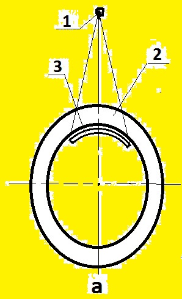
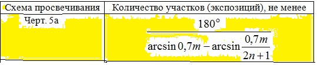

4.4. При контроле стыковых сварных соединений по
схеме черт. 5а направление излучения должно сов-
падать с плоскостью контролируемого сварного сое-
динения. При контроле по этой схеме угловых сварных
швов вварки труб, штуцеров и т.п. угол между на-
правлением излучения и плоскостью сварного сое-
динения не должен превышать 45°.
ПРИЛОЖЕНИЕ 4.1. Расстояние f от источника излучения
до обращенной к источнику поверхности контролируемо-
го сварного соединения не должно быть менее значений,
определяемых по формулe f >= 0,7С(1-m)D, где С=2Ф/К
при Ф/К >= 2 и С=4 при при Ф/К менее 2;
s - радиационная толщина, мм;
D - наружный диаметр контролируемого сварного соединения, мм;
m - отношение внутреннего и наружного диаметров контролируемого сварного
соединения;
Ф - максимальный размер фокусного пятна источника излучения, мм;
K - требуемая чувствительность контроля, мм.
3. Количество участков (экспозиций) при контроле по схемe черт. 5а не дол-
жно быть менее значений, определяемых по формулe, приведенной в таблице :

Выберите класс чувствительности по ГОСТ 7512-82
класс чувствител. класс : Выбрать 1, 2 или 3
наружный диаметр D, мм : Выбрать D больше d
внутренний диаметр d, мм : Выбрать d меньше D
усиление шва h, мм : Выбрать от 0, но не более 5 мм
фокусное пятно Ф, мм : Выбрать больше 0, но не более 5 мм
выбрать f>fmin f, мм : Оптимизация: выбрать f больше f_мин